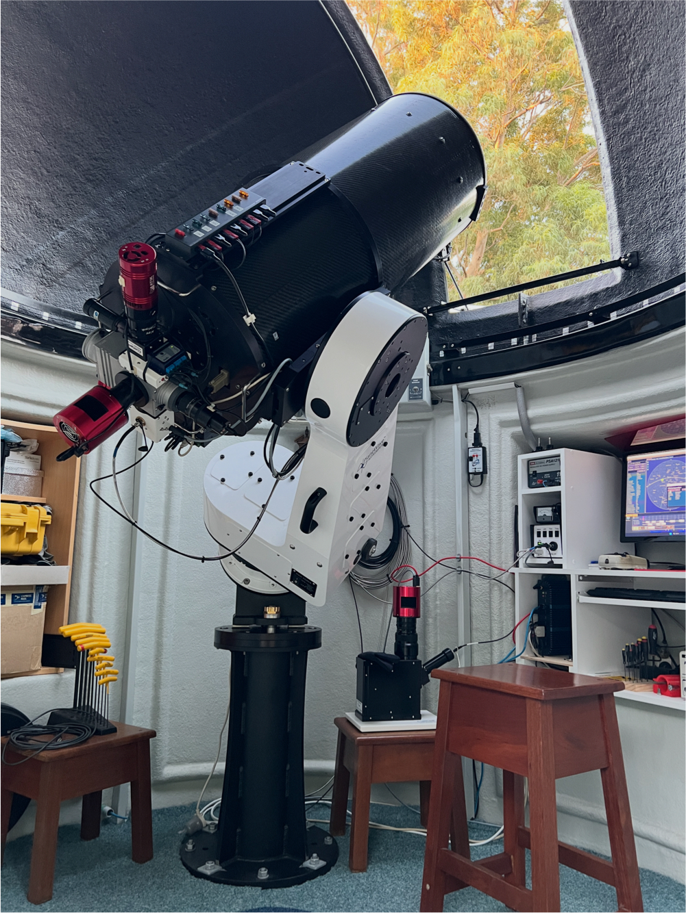

Shenton Park Observatory (SPO) is a privately owned observatory in Perth, Western Australia, established in 2001. It originally used a computerised 25.4 cm Schmidt-Cassegrain telescope, through which much of the astrophotography on this site was produced. In late 2003, a Sirius observatory dome was installed to permanently house the equipment. Motorised dome rotation was added in early 2005 to streamline unattended imaging.
From 2005 to 2008, SPO collaborated with Tenagra Observatories in the US on an automated supernova and minor planet hunting project. Dome shutter automation and weather monitoring were installed in mid 2005 as part of the upgrade to accommodate the project’s new equipment.
During the Tenagra collaboration, the dome and telescope performed over 100,000 slews in three years, imaging thousands of galaxies and resulting in 11 supernova discoveries. Following this, a campaign of minor planet work was undertaken in collaboration with Paulo Holvorcem in Brazil, yielding three main belt discoveries and dozens of near-Earth object recoveries and confirmations.
Complete automation has allowed the system to run safely unattended throughout the night in varying weather conditions, and provided a model for the SPIRIT robotic telescope initiative at The University of Western Australia. The telescope and imaging system have undergone many changes over the years, including the addition of a 35.6 cm Ritchey-Chrétien telescope in 2012.
In 2013, the observatory’s focus shifted towards spectroscopy. A range of spectrographs has been developed and used over the years, with a Shelyak eShel now in use. Recent work has focused on automating spectroscopic observations. Published work drawing on observations from the observatory is listed on the Research & Results page.
Current setup

Past equipment — 20 years of development
Equipment and modifications over the years — select to browse.